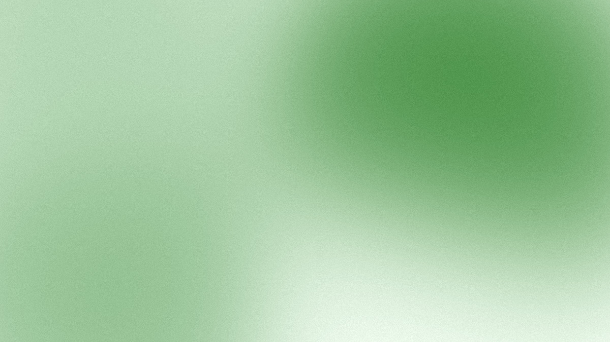
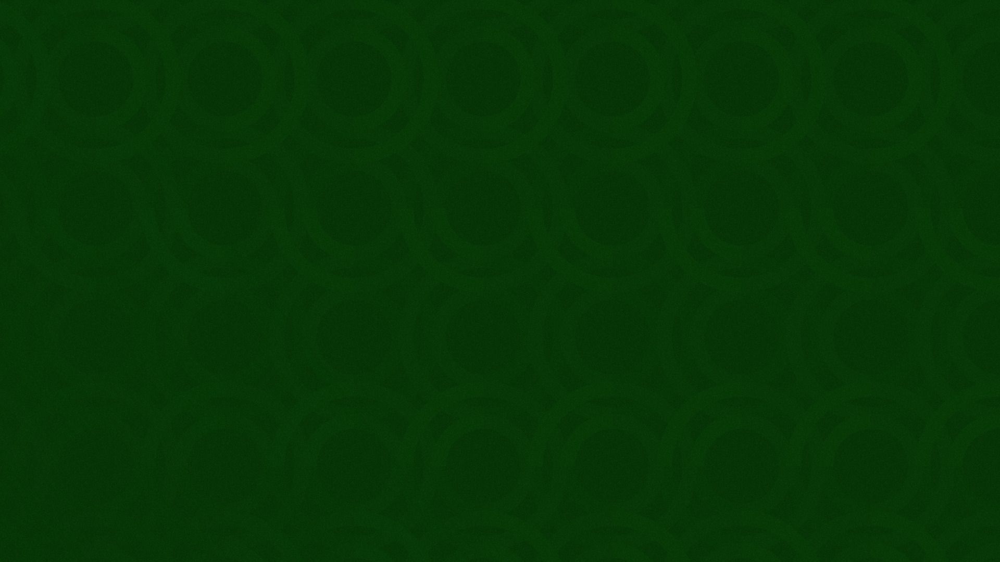
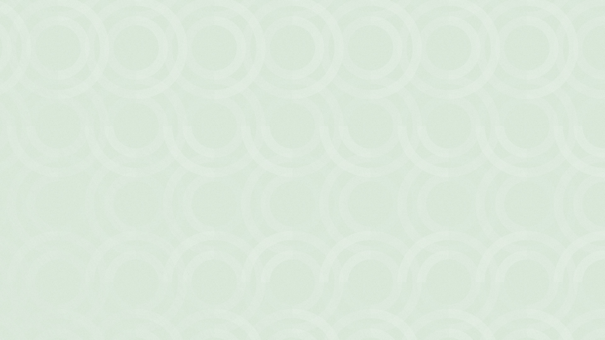

Brand · The look
Backgrounds
A dial from quiet to expressive. White is always right. The mesh is the default background. The logo pattern is very expressive, so it is used sparingly.
A dial, from quiet to expressive.

Before choosing a background, decide how loud the piece should be. Most of what khyzr makes sits at the quiet end.
- White. Always right.
- The mesh. The default background, when a surface wants more than white.
- The logo pattern. Very expressive. Used sparingly.
The gradient stands beside the dial. It has two small jobs of its own, below.
White is always right.
White is khyzr's ground: every working slide, every page of a document, every screen. When in doubt, use white. When a slide is busy, the background is the first thing to go.
- The three sites use none of the four backgrounds. That is intended: a website sits at the quiet end of the dial.
- A piece that needs a dark ground takes Ink, flat. The last slide and the back cover end that way.
The mesh is the default.
White type



Ink type


A soft mesh of the brand's greens. On a screen that can run it, it drifts slowly. Everywhere else it is a still image.
- Dark, for white type. The default look.
- Light, for ink type.
- It opens and closes: a deck's cover and its dividers, a document's cover, a LinkedIn cover, a meeting background, one card in a set.
- It never sits under working content. Under a paragraph, a table, or a chart, the ground is white.
The logo pattern.

White type



Ink type


The khyzr symbol repeated edge to edge, so the blades of neighbors close into rings. Each row is turned a quarter turn on from the row above. It is drawn in one ink, tone on tone, and nothing in it moves.
- Dark, for white type. The default look. Light, for ink type.
- It is very expressive, so it is rare: once in a piece, or not at all.
- It thins toward the lower left, so type has a calm place to sit.
- It is a pattern, not a mark, and it never stands in for a logo. A surface that carries it still carries a real logo file where a logo is needed. It is the one exception to the logo rules (see Logos).
- In print and at small sizes, the dark look has a stronger cut. On a screen its two greens sit one step apart and the rings read. In ink they close into one green, so the print cut sets them two steps apart.
The gradient.


One approved ramp, from Pitch through the greens to white. It is not a fifth background.
- A cover. Full bleed, on a document or a deck, in place of the mesh.
- A turn. The passage from a dark page to a light one, or back.
- Type sits on its dark end, in white, or on its white end, in ink. Never across the greens in between.
- Never behind running text.
Where each one goes.
The surface decides the setting.
| Surface | Background |
|---|---|
| A working slide, a page of a document | White |
| A deck's cover and dividers | The mesh, as a panel on the white slide |
| A deck's closing slide, a document's back cover | Ink, flat |
| A document's cover | The mesh, or the gradient |
| A LinkedIn cover, a share card | The mesh |
| A meeting background | The mesh, either look |
| One cover, one closing, or an event khyzr hosts | The logo pattern |
| A website | None |
How often.
The louder the setting, the rarer it is.
- White: as often as you like.
- The mesh: the openers and the breaks. At most two in view at once.
- The logo pattern: once in a piece, or not at all. One slide of a deck. One page of a document.
- The gradient: once in a piece.
What never shares a surface.
One texture to a surface, so each one reads.
- The mesh and the logo pattern. Not on one surface, and not on one slide or spread.
- The two looks of one pattern.
- A background and a photograph.
- The gradient and either pattern.
- A background and a paragraph. On any background, type is large and brief: a title and one line.
Use them as they are.
Each background is a finished image. Its greens, its scale, and its grain are part of it.
- Never recolor, tile, rotate, or redraw one to make another.
- Match the image's shape to the space. Scale it by the corner, and crop it. Never stretch it.
- Set as a panel, a background takes rounded corners, as a photograph does. Full bleed, it takes none.
- Both patterns are khyzr's and stay green. Each product has textures of its own, on its own page.
- For which logo file sits on a background, see Logos.
Ready images.
Every background ships as still images, cut for the shapes people need. Each look of the mesh and the logo pattern comes in all of them.
| Shape | For |
|---|---|
| Slide | A cover, a divider, a closing slide. Also the meeting background |
| Band | A strip across a slide or a page, or the panel behind a title |
| Card | One card in a set, or a picture slot |
| A4, portrait and landscape | A document's cover |
| LinkedIn covers | A company page and a personal profile |
| Square and portrait | A post |
- A file is named for what it is:
khyzr-mesh_dark_slide_1920x1080.jpg. - Each shape is its own picture, not a slice of another.
- The gradient ships for slides and A4, in both directions.
- The dark logo pattern's print cut ships as A4, card, and band. Its files carry
dark-printin the name. - They are in the Drive's Backgrounds folder and in the brand kit. See Templates and files.